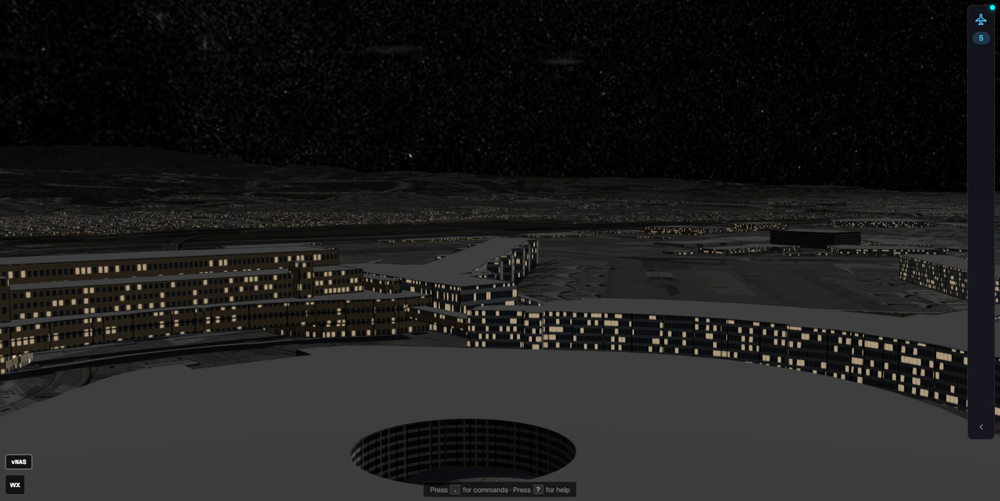
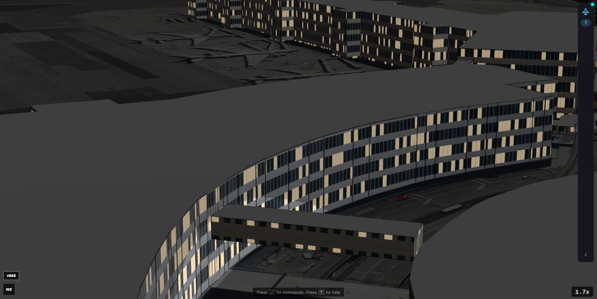
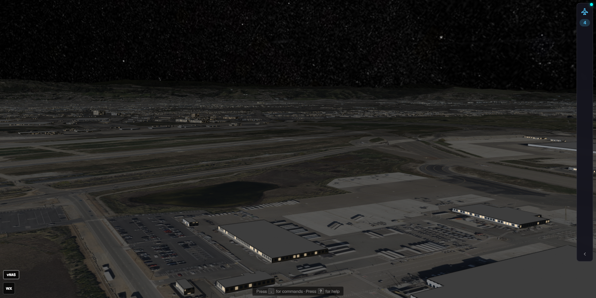
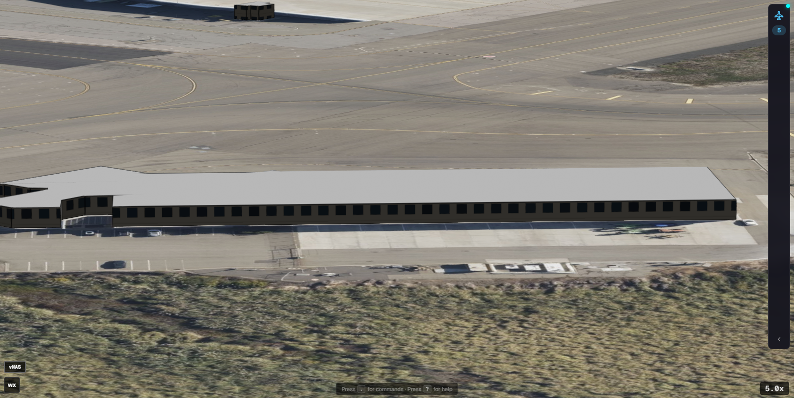
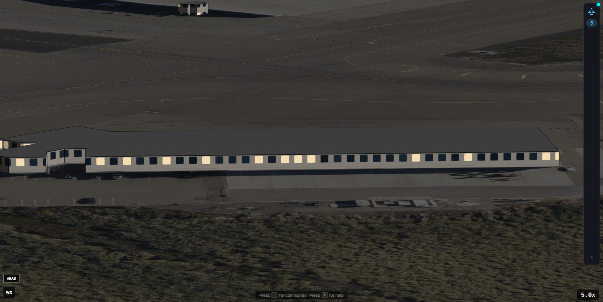

Per-type palette chosen by a stable per-building hash; facades by type (offices and terminals banded, parking garages slab bands, hangars ribbed with door panels, houses punched windows, domestic garages and carports a plain wall, the rest the previous window grid). Same poses as the earlier window-fade captures.




